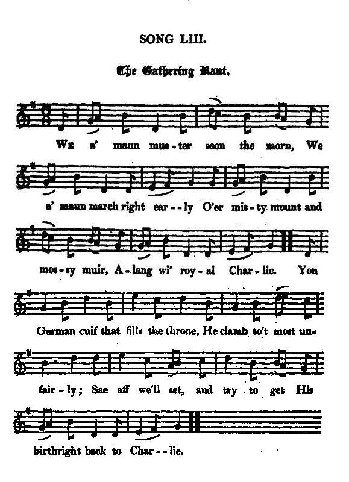

The Gathering Rant
L'air du rassemblement
A Gathering song
Tune - Mélodie"The Quaker's Wife"
from Hogg's "Jacobite Relics" 2nd Series N°53 page 98
Sequenced by Christian Souchon

|
To the tune:
"Is a Buchan (a district around Peterhead, north of Aberdeen) song got from my correspondent at Peterhead. The air is a modification of " The Quaker's Wife. " (Hogg in "Jacobite Relics 2nd series"). Phillips Barry, in the bulletin of the Folksong Society of the Northeast, No. 11, pg. 13, traces the tune back to the 14th century plain-chant, "on the authority of Wilhelm Tappert's curious little book "Wandernde Melodien". Samuel Bayard thinks that the tune is either devolved from "The Mill Mill O" or that both tunes evolved from a single tune... John Glen (1891) finds the earliest appearance of the melody in print in Robert Bremner's 1757 "Collection of Scots Reels or Country Dances", However, an earlier printing can be found in Rutherford’s "Choice Collection of Sixty of the Most Celebrated Country Dances" (London, 1750). The original lyrics read thus: The Quaker’s wife sat down to bake With all her bairns about her. She made them all a sugar cake, And the miller he wants his mouter (i.e. a fee for grinding flour) . Sugar and spice and all things nice, And all things very good in it, And then the Quaker sat down to play A tune upon the spinet. Merrily danced the Quaker’s wife, And merrily danced the Quaker Merrily danced the Quaker’s wife, And merrily danced the Quaker. Source "The Fiddler's Companion" (cf. Liens). |
A propos de la mélodie:
"Voici un chant du Buchan (région de Peterhead au nord d'Aberdeen) communiqué par mon correspondant à Peterhead. L'air est une variante de " La femme du Quaker " (Hogg dans "Jacobite Relics", volume II). Barry Phillips, dans le Bulletin de la Folksong Society of the Northeast, n°11, page 13, fait remonter cette mélodie à un air de plain-chant du 14ème siècle, en s'appuyant sur l'intéressant petit livre "Wandernde Melodien" de Wilhelm Tappert. Samuel Bayard croit qu'elle est dérivée de "The Mill Mill O" , ou que les deux airs procèdent d'une mélodie commune... John Glen (1891) indique que la première version imprimée de ce morceau se trouve chez Robert Bremner, dans son "Recueil de Reels et contredanses d'Ecosse" de 1757, et qu'il apparaît aussi dès 1768 dans le manuscrit "Gillespie de Perth". Cependant, il en existe une version imprimée plus ancienne, dans le florilège des "Soixante contredanses les plus célèbres" de Rutherford (Londres 1710). Les paroles de cette chanson sont les suivantes: La femme du Quaker s'assit pour cuire Ayant près d'elle tous ses enfants. Elle leur a fait un gâteau de sucre; Le meunier réclame son argent. Sucre, épices et des noisettes, Tout ce qu'elle trouve de bon! Le Quaker s'assit à l'épinette Pour jouer un chant à sa façon. Et la femme du Quaker danse, Et le voilà qui danse aussi. Et la femme du Quaker danse, Et le voilà qui danse aussi. Source "The Fiddler's Companion" (cf. Liens). |

|
THE GATHERING RANT
1. We a' maun muster soon the morn We a' maun march right early O'er misty mount and mossy muir, Alang wi' royal Charlie. Yon German cuif that fills the throne, He clamb to't most unfairly; Sae aff we'll set, and try to get His birthright back to Charlie. 2. Yet, ere we leave this valley dear, Those hills o'erspread wi' heather, Send round the usquebaugh (*) sae clear; We'll tak a horn thegither. And listen, lads, to what I gie; Yell pledge me roun' sincerely: To him that's come to set us free, Our rightful ruler, Charlie. 3. Oh! better lov'd he canna be; (**) Yet when we see him wearing Our Highland garb sae gracefully, 'Tis aye the mair endearing. Though a' that now adorns his brow Be but a simple bonnet, Ere lang we'll see of kingdoms three The royal crown upon it. 4. But ev'n should Fortune turn her heel Upon the righteous cause, boys, We'll shaw the warld we're firm and leal, And never will prove fause, boys. We'll fight while we hae breath to draw For him we love sae dearly, And ane and a' we'll stand or fa', Alang wi' royal Charlie. (*) this compound, rendering the Gaelic "uisge beatha", was later supplanted by the shorter "whisky". (**) (the same sentence is in the chorus of Lady Nairne's "will ye no") Source: "The Jacobite Relics of Scotland, being the Songs, Airs and Legends of the Adherents to the House of Stuart", Volume II collected by James Hogg, published in Edinburgh by William Blackwood in 1821. |
L'AIR DU RASSEMBLEMENT
1. Du rassemblement je vois poindre l'aube. Mettons-nous en marche, il est grand temps. Par les monts brumeux, la mousse des landes, Car le Prince Charles nous attend. Des traîtres ont mis sur le trône Un vil usurpateur germain. Allons, en route! Il faut que l'on donne Ce qui revient de droit à chacun. 2. Avant de quitter la vallée si chère, La bruyère qui couvre ses flancs, Faites circuler cette boisson claire (*) Dont nous boirons tous dans l'olifant. Entendez le toast que je porte, Reprenez-le mot à mot: "Au seul roi légitime, le notre, Venu nous délivrer de nos maux!" 3. Mieux aimé que par nous il ne peut être, (**) Mais lorsque nous le voyons vêtu Du gracieux costume de nos ancêtres, Nous ne l'en idolâtrons que plus. Qu'importe la coiffe dont s'orne Son front. Même un simple bonnet: Des trois royaumes c'est la couronne Que nous verrons sur ce front briller. 4. Mais si la Fortune à sa juste cause Voulait, l'ingrate, le dos tourner, Le monde verrait qu'avant toute chose Ce peuple chérit la loyauté. A celui qu'ici chacun aime Nous sacrifierons nos vies. Vaincre ou mourir n'est pas un dilemme, Lorsque c'est aux côtés de Charlie! (*) dans le texte anglais: "usquebaugh" (gaélique "uisge beatha") qui sera plus tard remplacé par "whisky". (**) Phrase reprise par Lady Nairne dans "Will ye no..." (Trad. Christian Souchon(c)2010) |